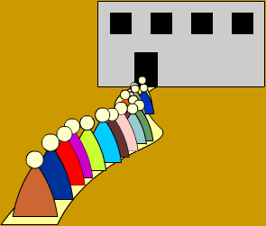
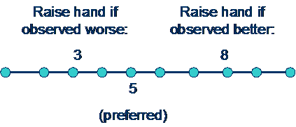
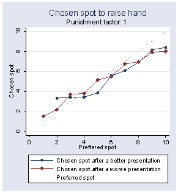
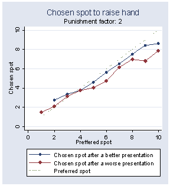
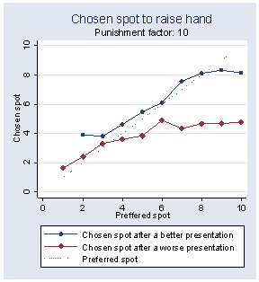
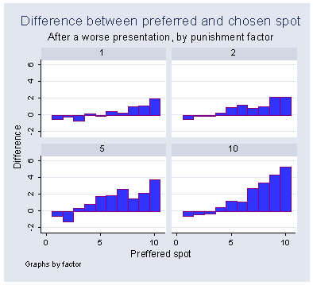
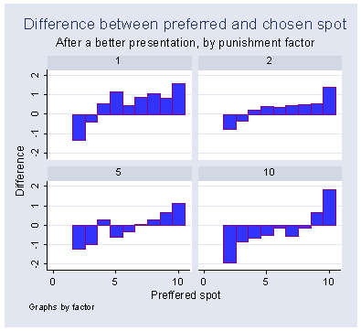

Your Turn!

by Kirill Chernomaz and
Yen-Sheng Chiang
Overview¡X
Using the method of genetic algorithm, we
attempt to model how individuals volunteer to give presentations in a sequence emerging
from the consideration of two aspects: Individuals would like to present as
close as possible to their exogenously given preferred positions while trying
not to, in order to avoid an unfavorable contrast, present right after a talk
whose quality is deemed as better than theirs. We are interested in how
individuals actually choose the order of presentation as the strategies evolve
over generations.
The Model¡X
Consider a group of ten students who are
going to present their papers. The order of presentation is based on a
volunteering basis. For each position, the instructor calls for a volunteer. If
there are many hands up, the tie is broken by randomly choosing one from the
volunteers. Similarly, if nobody volunteers the instructor chooses a student at
random from those who have not yet presented. Each student has a preferred spot
of the order, which is exogenously given by the discreet uniform distribution
between 1 and 10. The quality of students¡¦ presentations is also
predetermined by a continuous uniform
distribution: U(0,1).
Moreover, students do not want to present if they think the quality of the preceeding presentation is better than theirs. This is
captured by the specific payoff function given below.
U(s, x, q, q(t-1))= -|s-x|*1(q>q(t-1)) - a|s-x|*1(q<q(t-1))
where: s is the
preferred spot
x is the actual spot
q
is the quality of the student¡¦s presentation
q(t-1) is the quality of the last presentation
a is a punishment factor (if present after a work with better
quality)
1
is an index variable
Such a payoff structure inevitably
constitutes a trade off¡Xstudents
might pass on their preferred spot because of a better presentation coming
before it, or they would choose to present earlier than their preferred spot
because of witnessing an inferior presentation and a chance that the following
presentation will be better than theirs.
Each student possesses a strategy which is a
pair of functions (u(s), v(s)), mapping from his/her
preferred spot s. If a student¡¦s preferred spot is s, then he/she will
volunteer to present at the u(s)th spot if
the (u(s)-1)th presentation is
worse than his/hers and volunteer to present at the v(s)th
spot if the (v(s)-1)th presentation is better.
We focus on cut-off strategies: if a student is ready to present at the xth spot after a worse/better presentation and
is not chosen due to a tie, he/she will continue to raise his/her hand later on
if the presentations continue to be worse/better than his/hers. As an example,
consider a strategy that prescribes the following: u(5)=3 and v(5)=8

The example shows
that the preferred spot is 5, but the student will jump in if the 2nd
presentation is worse than his/hers. If there is no inferior work till the 7th
spot, the actor will jump at the 8th spot even if the 7th
presentation is superior.
The evolution of strategies is modeled by a genetic algorithm. Students are agents
who participate in 50 sessions of
presentations and get an average payoff from them. To produce a new generation
of strategies, agents go through a standard process of genetic algorithm:
selection, mutation and cross-over. All the genetic operators are applied to
the 2 populations of functions: those that map a preferred spot after a better
presentation and those that map a preferred spot after a worse one. Each
function is represented by a binary string of length 100. Cross-over
probability is set to be 0.4, mutation probability is 0.1, and pair-wise
tournament is chosen as the selection mechanism. Sequences of 10,000 generations are considered.
Results¡X
The following reports are based on the
averages over the last 100
generations across 10 independent trials. First, we examine how students
actually chose the spots in contrast to their preferred ones. The plots below
recorded the chosen spots (vertical axis) against the preferred spots
(horizontal axis).

Figure 1
Figure
2
Figure 3
If there is no punishment (a=1), it is no different
to present before a superior or inferior work. The actual chosen spots will be
close to the preferred spots. Figure 1 supports this conjecture. Deviations
from the 45-degree-angle line can be attributed to random selections when ties
occur. Once punishment is imposed on presenting after a better work, one would
expect that students may decide to jump in earlier having observed an inferior
work and will not postpone presentation much from their preferred spots after a
superior presentation. That is exactly what we deduce from the simulation data.
Having observed a superior presentation agents raise
their hand around their preferred spots. It is not surprising since the next
presentation is likely to be even better and the punishment for deviation is
too severe to raise one¡¦s hand before the preferred spot. Instead, it is the
spot of presentation after an inferior work that moves further to the front end
capturing the effect of punishment. This can be observed in Figure 2 and 3,
where as punishment becomes severe the red line (actual chosen spot after a
worse presentation) falls down, especially for those students with larger
preferred spots (>5). We can obtain the same conclusion by observing the
following plots that record the difference between the preferred spots and the
chosen spots after an inferior and a superior presentation respectively. From
Figure 4, we see increasing differences when punishment cost goes up. However,
the differences are much smaller in Figure 5.
 
Figure 4 Figure
5
Finally, we found for a given preferred spot
the distances between the chosen spots after an inferior and a superior
presentation are increasing as punishment cost rises. This is especially
apparent for cases of larger preferred spots (see Figure 6).

Figure 6
Conclusion and Discussion¡X
By assumption, each student has their own
preferred spots of presentation order. But since the quality of presentation
varies and students try not to embarrass themselves by presenting right after a
seemingly good work done by others, the preferred spots will not always be
chosen. The evolution of strategies, operated by genetic algorithm, shows that
students actually chose spots somewhere near or earlier than their preferred
spots, depending on the quality of the precious presentation. More
interestingly, as the motivation of not presenting after a superior work
becomes stronger, students tend to present earlier than their preferred spots
if conditions permit (seeing an inferior work).
There are some directions for future
exploration. First, in the present model the distributions of preferences of
spots and quality of work are both uniform. Future work can test if other
distributions or degrees of variation will lead to different results. In addition,
in the model students are restricted to take into account the direction of
quality comparison only (whether one¡¦s work is better of worse than the last
observed presentation). However, absolute levels of quality matter for the
probabilities of observing a specific quality of presentation later in a
session. For example, given a preferred spot of 5 and quality 0.9 (out of 1) an
agent may make different decisions after observing presentations in the 3rd
spot with qualities 0.1 or 0.89. He/she may want to wait in the former case
(expecting next presentation to have quality <0.9) but raise the hand in the
latter case (expecting next presentation to have quality >0.9). Future work
could extend the analysis along this direction. The difficulty is that strategy
space becomes increasingly multi-dimensional.
There are many examples of ordering of
sequences, such as airplanes waiting to take off or the release of movies. Our
model particularly considers the variation of quality and the psychological
mechanism where people avoid following a better work. Our simulation shows
volunteers will congest in the middle range of spots of the presentation order.
One could take this into account to design a more effective mechanism to
designate the presenter rather than by a random selection when the peak of
volunteers happens. The particular design can point to specific purpose such as
increasing an overall better quality of presentation or the maintenance of
fairness.
Final Remarks¡X
The simulation is implemented in JAVA. The code can be obtained upon request from the authors. Please email to: chernomaz.1@osu.edu